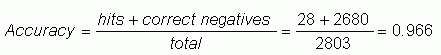
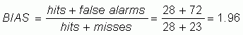
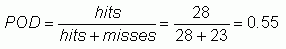
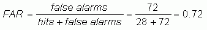
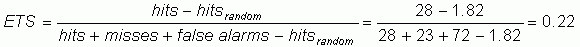
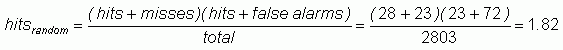
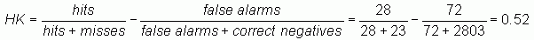
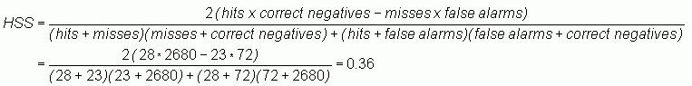
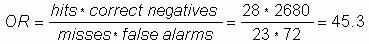

Of the tornado events that were either forecast or observed, 23% of those were correctly forecast.
Of the tornado events that were either forecast or observed, 23% of those were correctly forecast.
In March 1884 Sergeant John Finley initiated twice daily tornado forecasts for eighteen regions in the United States, east of the Rocky Mountains. Finley claimed 95.6% to 98.6% overall accuracy for the first 3-month period, depending on the time and district, with some districts achieving 100% accuracy for all 3 months. A critic of the results pointed out that 98.2% accuracy could be had by merely forecasting "no tornado"! This clearly illustrates the need for more meaningful verification scores.
The contingency table for Finley's (1884)
forecasts is:
| Observed | ||||
| tornado | no tornado | Total | ||
| Forecast | tornado | 28 | 72 | 100 |
| no tornado | 23 | 2680 | 2703 | |
| Total | 51 | 2752 | 2803 |
The standard categorical verification scores are computed and interpreted below:
Accuracy (fraction correct) -

Overall, 96.6% of the forecasts were correct.
Bias score (frequency bias) -

Tornados were predicted roughly twice as often as they occurred.
Probability of detection (hit rate) -

Slightly more than half of the tornados that occurred were correctly predicted to occur.
False alarm ratio -

72% of the forecasts for tornados turned out to be false alarms (no tornado occurred).
Threat score (critical success index) -
Of the tornado events that were either forecast or observed, 23% of those were correctly forecast.
Equitable threat score (Gilbert skill score) -

where

Since one could expect to get very few positive tornado forecasts correct
due to random chance (only about 2 out of a total of 2803 forecasts), the
ETS is almost the same as the TS.
Hanssen and Kuipers discriminant (true skill statistic, Pierce's skill score) - 
The forecasts were 52% able to separate the "yes" cases from the "no"
cases. Because the correct negatives term dominates the others in
the contingency table, the HK tends toward the POD when "yes"
events are rare.
Heidke skill score - 
There was a 36% improvement in forecast accuracy when compared to random chance.
Odds ratio -

The odds were roughly 45 to 1 that a forecast for a tornado would be a
hit as opposed to a false alarm.
References:
Finley, J.P., 1884: Tornado predictions. Amer.
Meteor. J., 1, 85-88.
Murphy, A.H., 1996: The Finley affair: A
signal event in the history of forecast verification. Wea. Forecasting,
11,
3-20.
Stephenson, D.B., 2000: Use of the "odds
ratio" for diagnosing forecast skill. Wea. Forecasting, 15,
221-232.